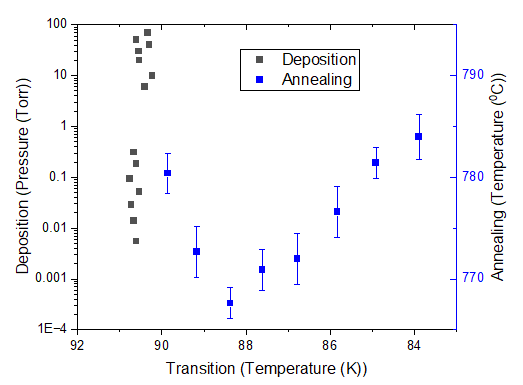
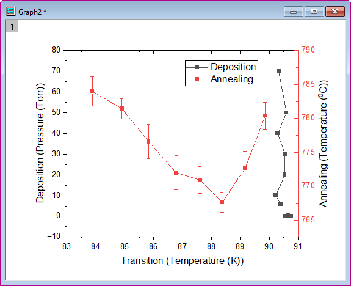
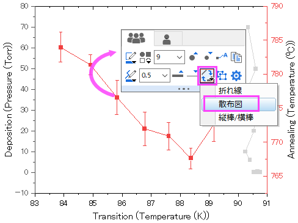
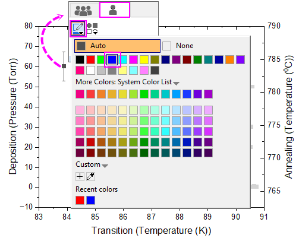
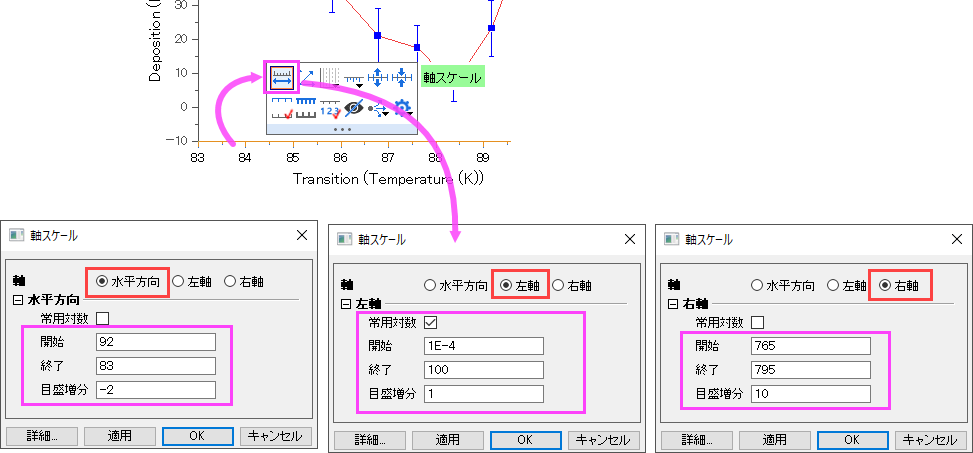
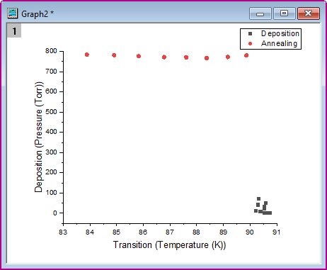
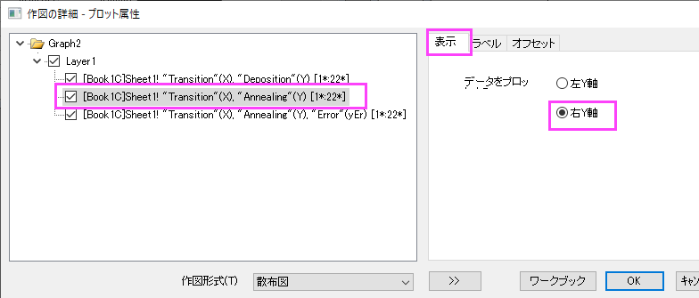
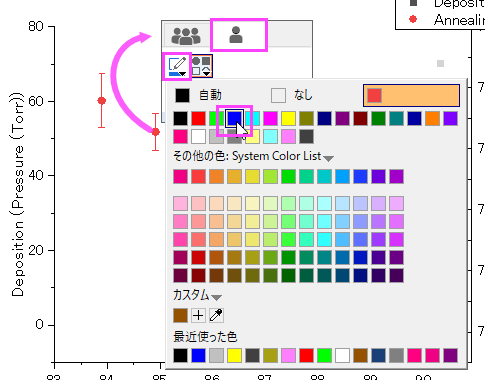
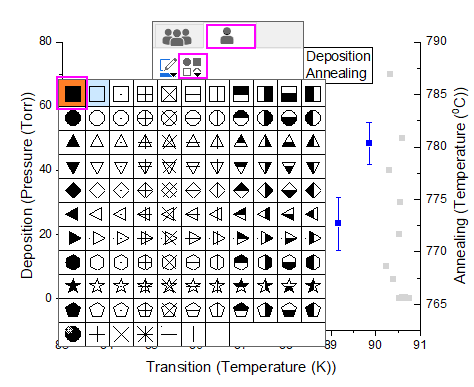
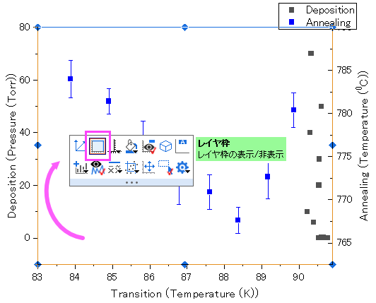

二重Y軸グラフ
Double-Y
概要
このチュートルアルは、1つのレイヤに2つのY軸を持つグラフを作成する方法を示します。
- 
必要なOriginのバージョン: Origin 2023 以降
学習する項目
- Y軸が2つあるグラフを作成する
- 散布図を編集する
- 軸スケールを変更する
ステップ
このチュートリアルは、サンプルプロジェクト、\Samples\Graphing\Double Y.opjを使用します。
方法1：組み込みの二重Y軸テンプレートを使用する
- <Origin Installation Directory>\Samples\Graphing\Double Y.opj を開き、ワークブックをアクティブにします。
- ワークシートのデータ4列を選択し、メニューから作図：複数区分/軸：二重Y軸と選択して二重Y軸のグラフを作図します。
- 
- プロット上でダブルクリックしてミニツールバーを開き、プロットを変更ボタンをクリックして散布図を選択し、すべてのプロットのプロットタイプを変更します。
- 
- 2番目のプロットの1つの散布点をクリックし、ポップアップするミニ ツールバーで単一プロットタブに切り替えて、色を青に設定します。
- 
- 下X軸をクリックし、ポップアップするミニツールバーで 軸スケールボタンをクリックして軸スケールダイアログを開き、下X、左Y、右Yの軸スケールを設定します。
- 
- 最終的に、次のグラフのようになります。
方法2：左Yグラフへ右Yをグラフに追加する
- ワークシートの4つのデータ列を選択し、メニューから作図：基本の2Dグラフ：散布図と選択して散布図を作図します。
- 
- 散布図をダブルクリックして作図の詳細ダイアログを開きます。左側パネルで、2番目のプロットを選択して表示タブに移動し右Y軸を選択し、右のY軸に対してプロットします。Note: この方法でオブジェクトマネージャを使ってプロットを右Y軸に割り当てることもできます。
- 
- 2番目のプロットをクリックしてミニツールバーを開き、シンボルの色を青に変更します。そして、シンボルの形状を四角形に変更します。
- 
- 
- 現在のレイヤの白いスペースをクリックして、ミニツールバーからレイヤ枠を追加します。
- 
- 方法1のステップ5と同じように軸スケールを設定します。
- 方法1と同じグラフが得られます。